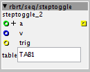

hi mood_organ, thanks!!! ups......I didn't notice the click yet...
I got rid of the position+length outputs for now because I'm not entirely sure of the conceptual path to follow -output playback position in samples,as k-rate integer? -as red-cord-signal,relative to the buffers length? -or,relative to the current loop's length (that would practically be a ramp linked to the loop's tempo,and in effect,almost a tap-tempo-object (which would be gold)) ,but I-am-not-getting-there right now
also,I didn't get anywhere so far regarding speed/pitch manipulation....
description: converts integer k-rate ticks (0.333 msec) to something like HZ, in order to set the speed of oscillators. it's meant to be used in conjunction with the 'LFO/saw lin' object. for more info,have a look at the 'taptempo.axs' in the library under patches/rbrt
 description: useful for building a step sequencer,classic layout (808,909...)
when receiving a pulse at 'trig', the object will lookup the table's value at index '+a'. if the value is zero, the sample at index '+a' will be set to the value of 'v', if the value is non-zero,the sample will be set to zero. 'v' could be note-on velocity,for example..
update: added outlet,providing feedback about the state of the current sample after toggling
description: demultiplexer with sample and hold.connects inlet in to outlet number s. the current value of output number s will be held until the value of inlet in changes. when s changes,the output value of the previous outlet number s will be held.
I guess this is useful for routing modulation sources.
demultiplexes data incoming on 4 inlets to 16 dials named in the format 'rowcolumn'. the 'rows' are wired to the inlets 'in0' to 'in3',the 'column' is defined by the inlet 's' (so for example 4 dials receiving from in2 have to be named '20' '21' '22' and '23') once 's' is changed, 'dialmatrix' will wait until the input changes before updating the 'target-dial'.
done in an effort to control 4 different drum-sounds from 4 midi-controllers.
please note : unfortunately,all 'target-dials' have to be present in your patch,otherwise you will get an error and the patch cannot go 'live'. you can find patchers with subpatchers already containing a 'dialmatrix' and the respective dials in contrib/rbrt/patches. to use them,copy / paste the subpatcher to your patch. you may use several instances of 'dialmatrix' in different subpatchers,BUT it's not possible to store them with the 'preset-manager', since the dials in the subpatchers have the same ID's. check out 'tablestore 8' for a more elegant solution.
same as above,comes in the taste 1 to 4 ,8 to 16 , 8 to 32 and 8 to 64 dials again,get yourself the respective patch at contrib/rbrt/patches to avoid the boredom!!
description: stores and outputs 8 values in a table. if 'write' is set to on and the input is changed,the value at input 'vn' will be stored in the table at index 'n' + 'offset'. if 'write' is off, the data will be put out. if 'thru' is set to on,the value at input 'vn' will be passed through to output 'vn' without being stored. you may 'step through' the data in the table by changing 'offset'.
done in an effort to de-multiplex and store data from 8 midi-controllers to different destinations, since the table can be saved to and loaded from sd-card.
useful to easily set buttons to a colour on midi-controllers with visual feedback (novation lauchpad,livid base...) on 'trig',a note with 'velo' n is sent to the controller and put on hold. comes in two flavours...
He @rbrt I am trying to figure out how to sync your looper to a clock but I'm kind of stuck.
The first part goes well, I've quantized recording to the clock. But at some time the loops will start to drift. (wich is expectable with this approach) This is why my Idea was to retrigger play all the time to keep it in sync, like I do in this setup:
The problem is your looper doesn't need a single trigger but a toggle to keep playing, so basically I would need toggle that is on for the length of the loop that turns off really short at the end of the loop in order to retrigger for the beginning again. (wich would propably result in a click that is hopefully not to obvious) Do you have any Ideas how to solve this? Or are you maybe already working on a sync solution?
Furthermore I couldn't get the loop saving of your example patch to work. You press save, get the annoying bleep and then the sample should be on the sd card right?
P.S. just checking out you dial matrix, really nice idea. Maybe some value smoothing would be great though in order to avoid skipping when you switch.
Yep, this I noticed too. Been working on making kind of a dial matrix for the Modular Thing Add on board. I would like to be able to use each button/knob for more than one thing.
But if you change from one knob to another and back again, the knob value will jump. Been trying to fix this by using sample & hold and the hook object, but it doesnt seem to work properly. I think it might be because of how the hook object works. If the input for the hook object it bypassed, the hook object will go to zero. It needs input all the time for some reason.
I've also been using Step toggle for building a step sequencer. It works perfectely but when I load a new pattern into the table, the status output won't update. I've solved this by using a table/read for each steps status, so no problem I don't want to distract you from building the über looper just wanted to report it
...sooo.. here is what I think could be an approach for a transport-synced looper.. I would be happy if you give it a try,it's still quite messy but there are comments all over the place.
basically,recording the first loop will start a 'global transport'. then,you can overdub into this loop or record other loops in sync to the transport. when you change the tempo of the transport,the loops will follow (pitch down,in this case) you can even do crazy stuff like overdub with the transport's tempo dropped down...
it's not an all-in-one-object like the 'old' looper,but more a set of modules, for example,the module for sync recording is also the player for the 'master-loop'. I think this makes sense to keep things more flexible for non-coders (as if I would be one ) my_looper_SYNC_NEW_100.axp (20.5 KB)
the playback engine is copy and pasted from table/read/interp by @johannes , BTW.


 )
){kind=link}